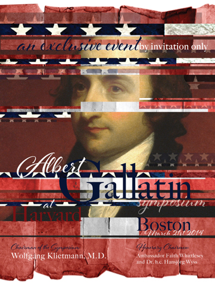
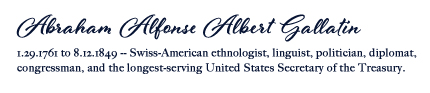

WELCOME
The Swiss-American Chamber of Commerce, Swissnex and the Consulate of Switzerland, together with the Harvard Business School Healthcare Alumni Association united to prepare The Albert Gallatin Symposium to commemorate his time at Harvard and to celebrate the Bicentennial of his greatest diplomatic and political achievement, the Peace Treaty of Ghent in 1814, which granted the United States of America for the second time its definitive independence. We are honored to obtain the support of the City of Geneva for our program.
Albert Gallatin started his first employment in the New World as Instructor for French at Harvard College. For the symposium a distinguished audience of Swiss and American attendees will convene by invitation only to celebrate Gallatin’s contributions to America.
The purpose of this symposium is to preserve the legacy and honor of Albert Gallatin, his fervent commitment to education and innovation, his legacy as the longest serving Treasurer, Founder of a bank, and cofounder of a university, and to strengthen the bond between two sister Republics, The United States of America and Switzerland.
